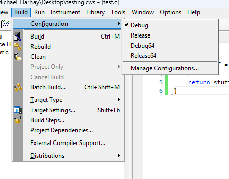
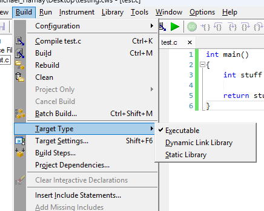
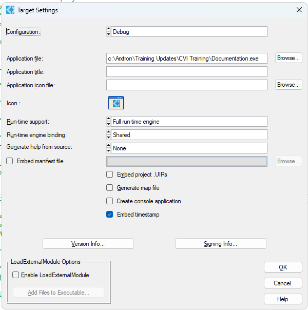
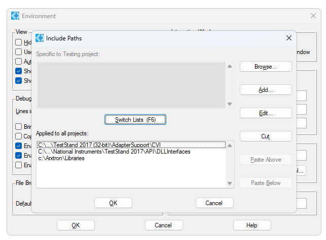
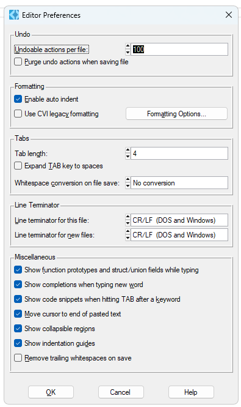

- Generated by
 1.16.1
1.16.1
|
CVI Crash Course
|
CVI contains a number of menus containing configuration settings and options. This section of the guide will briefly list the most important settings and their recommended states.
Can be accessed via Build > Configuration. The resulting dropdown lists the available build configurations; more can be added by selecting Manage Configurations. The main configurations are:

Can be accessed via Build > Target Type. The resulting dropdown lists the available build target types:

Can be accessed via Build > Target Settings. Target settings are used to configure the various target types. These settings typically aren't touched, but are good to know about.

Can be accessed via Options > Environment > Include Paths. This menu determines CVI's search directories. Ensure that "C:\Arxtron\Libraries" is included.

Can be accessed via Options > Editor Preferences. Typically, these settings should not be changed, but are good to know about.
